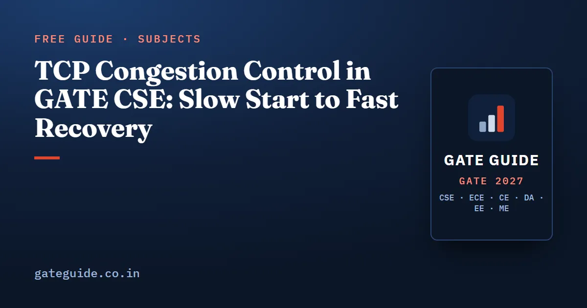

TCP Congestion Control in GATE CSE: Slow Start to Fast Recovery

TCP congestion control questions in GATE CSE usually hand you a starting window, a threshold and a list of loss events, then ask for the congestion window at some round trip. A second family asks which statements about Tahoe and Reno are true. A third, rarer one asks you to update a retransmission timeout. This guide teaches the four rules behind every trace, works one full trajectory, and then covers timeout estimation.
In this guide
Key takeaways
- Below ssthresh, cwnd doubles every round trip (slow start). At or above it, cwnd grows by 1 MSS per round trip (congestion avoidance).
- On a timeout, set ssthresh to half the current cwnd and cwnd to 1 MSS.
- On three duplicate ACKs, Tahoe acts as on a timeout. Reno sets cwnd to the new ssthresh and continues linearly.
- The sender can have at most unacknowledged bytes in flight.
- The timeout is , with the variation updated before the smoothed RTT.
The words you need first
Congestion control stops a sender from overloading the network. It is different from flow control, which stops a sender from overloading the receiver. TCP does both with windows: the receiver advertises a receive window (rwnd), and the sender keeps a congestion window (cwnd) of its own.
Windows are counted in MSS, the maximum segment size, unless a question says bytes. One round trip time (RTT) is the time to send a window and get its acknowledgements back. The slow-start threshold (ssthresh) is the cwnd value at which the sender stops doubling and starts growing slowly.
The sender's effective window is the smaller of the two:
The four rules behind every trace
Every cwnd question uses these four rules, applied once per round trip.
| Situation | ssthresh | cwnd next |
|---|---|---|
| No loss, cwnd below ssthresh (slow start) | unchanged | |
| No loss, cwnd at or above ssthresh (congestion avoidance) | unchanged | |
| Timeout (Tahoe and Reno) | 1 | |
| Three duplicate ACKs, Tahoe | 1 | |
| Three duplicate ACKs, Reno | new ssthresh |
Slow start is called slow, but it grows exponentially. Each acknowledged segment adds 1 MSS, and a full window of acknowledgements doubles the window. Congestion avoidance adds 1 MSS per round trip, which is additive increase. Halving on loss is multiplicative decrease. Together they form AIMD.
Trap: on a loss, halve the current cwnd, not the old ssthresh. If cwnd is 18 and ssthresh was 16, the new ssthresh is 9.
A full trajectory, worked
Start with cwnd = 1 MSS and ssthresh = 16 MSS, using Reno. A triple duplicate ACK arrives during round trip 7, and a timeout occurs during round trip 9. Find cwnd at the start of each round trip.
| RTT | cwnd at start | ssthresh | What happens |
|---|---|---|---|
| 1 | 1 | 16 | Slow start |
| 2 | 2 | 16 | Slow start |
| 3 | 4 | 16 | Slow start |
| 4 | 8 | 16 | Slow start |
| 5 | 16 | 16 | Reaches ssthresh; avoidance begins |
| 6 | 17 | 16 | +1 |
| 7 | 18 | 16 | Triple duplicate ACK |
| 8 | 9 | 9 | Reno: cwnd = ssthresh = 18/2 |
| 9 | 10 | 9 | +1, then timeout |
| 10 | 1 | 5 | ssthresh = ; slow start again |
| 11 | 2 | 5 | Slow start |
| 12 | 4 | 5 | Slow start |
| 13 | 5 | 5 | Doubling capped at ssthresh |
| 14 | 6 | 5 | +1 |
Two steps deserve care. At round trip 12, doubling 4 would give 8, but the cap holds it at 5. At round trip 10, ssthresh comes from the cwnd of 10 at the loss, not from the earlier ssthresh of 9. A short program running these rules prints this same table.
The same start under Tahoe
Under Tahoe, the triple duplicate ACK at round trip 7 resets cwnd to 1 with ssthresh 9. Without the later timeout, the windows from round trip 8 would run 1, 2, 4, 8, 9, 10. The cap at ssthresh again stops the doubling at 9.
Remember: questions ask for cwnd "at the start" or "at the end" of a round trip, and the two answers differ by one step. Write which one you are tracking at the top of your table.
How long to send a file in slow start
Another form asks how many round trips it takes to send a given amount of data. In slow start from cwnd = 1, the windows are 1, 2, 4, 8 and so on, so after round trips the total sent is:
Sending 31 MSS therefore takes 5 round trips, if ssthresh and rwnd stay above 16. If the threshold is lower, switch to adding 1 MSS per round trip once you reach it, and keep a running total. If rwnd is smaller than cwnd, the send window is rwnd.
Statements about Tahoe, Reno and AIMD
MSQ items present four statements and ask which are true. These are the ones that recur, and each follows from the rule table.
- Slow start grows cwnd exponentially, not linearly. True.
- After a timeout, both Tahoe and Reno restart from 1 MSS. True.
- After three duplicate ACKs, Reno restarts from 1 MSS. False; Reno continues from the new ssthresh.
- Fast retransmit resends the missing segment on three duplicate ACKs without waiting for the timer. True for both.
- Flow control protects the network. False; flow control protects the receiver, and congestion control protects the network.
Estimating the retransmission timeout
TCP must decide how long to wait before resending. It keeps a smoothed RTT (SRTT) and an RTT variation (RTTVAR), updated from each new sample . With the common weights and :
Update RTTVAR first, because it uses the old SRTT.
A worked update
Start from SRTT = 100 ms and RTTVAR = 20 ms. A sample of 140 ms arrives.
- ms.
- ms.
- ms.
A second sample of 90 ms gives RTTVAR = 22.5 ms, SRTT = 103.125 ms and RTO = 193.125 ms. Some textbooks define as the weight of the old estimate instead, so always use the definition the question states.
In one line: update the variation with the old smoothed value, then the smoothed value, then add four variations to get the timeout.
Where these questions sit in the paper
The 2027 syllabus names "TCP - flow control and congestion control" explicitly, and the trimmed Computer Networks syllabus gives retained topics like this one a larger share; see the computer networks syllabus changes guide. The book ranks the cwnd trajectory 12th in its Top 100, finds it in most papers since 2012, and notes that analysts reported TCP congestion phases in 2026. RTO estimation is rarer, with two approximate sightings.
For the rest of the subject, see the computer networks important topics guide. TCP congestion control also features in the most repeated topics analysis, and the rule table sits in the GATE CSE formula sheet. The Computer Networks chapter of the GATE CSE 2027 book has more trajectory practice with mixed loss events and worked solutions.
Quick revision
- Slow start: double per RTT, capped at ssthresh. Avoidance: +1 MSS per RTT.
- Timeout: ssthresh = half the current cwnd, cwnd = 1 MSS.
- Triple duplicate ACK: Tahoe as timeout; Reno sets cwnd = ssthresh = cwnd/2.
- Send window = .
- Slow start from 1 sends MSS in round trips.
- RTO = SRTT + 4 RTTVAR; update RTTVAR before SRTT.
- Check whether the question asks for the start or the end of a round trip.
Frequently asked questions
What happens to cwnd and ssthresh on a timeout in TCP?
On a timeout, ssthresh is set to half of the current congestion window, and cwnd drops to 1 MSS. The sender then restarts slow start, doubling cwnd every round trip until it reaches the new ssthresh, after which it grows by 1 MSS per round trip. Halve the current cwnd, not the old ssthresh, which is the most common slip.
What is the difference between TCP Tahoe and TCP Reno?
Both react to a timeout in the same way, setting ssthresh to half of cwnd and restarting from 1 MSS. They differ on three duplicate ACKs. Tahoe treats them like a timeout and restarts from 1 MSS. Reno performs fast retransmit and fast recovery, setting cwnd equal to the new ssthresh and continuing with linear growth.
How does slow start grow the congestion window?
In slow start, every acknowledged segment raises cwnd by 1 MSS, which doubles cwnd once per round trip. Growth is exponential despite the name. When cwnd reaches ssthresh, the sender switches to congestion avoidance and adds only 1 MSS per round trip. In GATE traces, cap the doubling at ssthresh rather than overshooting it.
How is the TCP retransmission timeout calculated?
The usual method keeps a smoothed round-trip time and a variation estimate. For each new sample, first update the variation using the old smoothed value, then update the smoothed value, then set the timeout to the smoothed value plus four times the variation. Typical weights are one eighth and one quarter, but always use the weights a question gives.
Is TCP congestion control important for GATE CSE 2027?
Yes. Congestion control is named explicitly in the 2027 syllabus. The book ranks the cwnd trajectory 12th in its Top 100, scoring it Very High, and finds it in most papers since 2012, with TCP congestion phases reported by analysts in 2026. It usually appears as a 2-mark NAT or a statement MSQ. Confirm the syllabus at the official site.
Sources
- GATE 2027 official website (IIT Madras)
- GATE 2027 CS syllabus (official PDF)
- GATE Overflow previous year questions
Dates, fees and the syllabus are set by the GATE 2027 organising institute and can change. Always confirm at gate2027.iitm.ac.in.